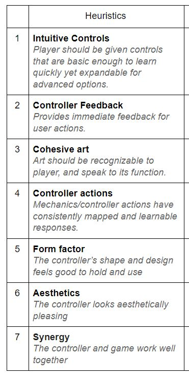

Heuristic Evaluation:
Instead of finding a already existing heuristics evaluation sheet to use, I made my own as none of the ones I found fitted the controller that I wanted to test.
The first 4 heuristics of my sheet were taken fromHERE They were the only heurstics that I could find that best suited the things I wanted to research about my custom controller.
They were the only heuristics that I could find that best suited the things I wanted to research about my custom controller.
The rest of the heuristics I made up myself in order to get the specialists to test the main things I wanted tested. Such as the way the controller is shaped, the look and aesthetics of the controller and whether the control works well with the game or not.
If I had just used a pre existing heuristics sheet I wouldn’t of been able get feedback from the specialists about these things. So it was best to make them up and add them in.
Of course it might of been better to use a heuristics evaluation sheet that has already been tried and tested by professional researchers before in order to get the best results, but in this situation it was better to come up with some new ones to better fit the components I wanted to test out.
This is my heuristic evaluation sheet: HERE
I got 3 specialists/peers from my course to test and analyze my custom controller and then fill out my Heuristics evaluation sheet.
The heuristics tested:

From these questions I got some good results into finding out what the specialists thought about my controller and inform me on what might need changing for improvement.
Based on their answers I created a survey.
Survey:
I chose to do a survey as my quantitative research method, as I believed it would be the best way to get answers on how my controller is failing in its design and how it could be improved.
The survey was created to get a more general view on the design and feel of the controller from people around the games academy.
Ideally I would of liked to get people from outside of the games academy to do the survey as well, but I was limited for time, and it was generally easier to get people I knew from the games academy then to spend more time trying to get lots of people from all over to play test and fill in my survey.
In this report I will refer to the people who filled in the survey as playtesters as they had to play test the controller game before filling in the survey.
The questions in the survey were made based on the notes I got from the specialists who did my Heuristics evaluation sheet. In the survey I really focused on the design and Usability of the custom controller and seeing if users enjoyed the experience of the controller.
List of the questions asked:
- Do you play video games in your spare time? (yes, no, sometimes: tick box answer)
- The controller was fun to use (5 point likert scale)
- The controller felt intuitive (5 point likert scale)
- Input feedback from the controller felt satisfying (5 point likert scale)
- The custom controller ergonomically feels good in your hands (5 point likert scale)
- The look of the controller made me feel immersed in the gameplay (5 point likert scale)
- Would you be interested in playing a finished game with a custom controller like this? (5 point likert scale)
- Which controls system was more fun to use? (Keyboard controls, Custom controller: tick box answer)
- Do you think the controller could be improved, if so, how? (short written answer for the tester if they wanted)
How the survey was conducted:
I got playtesters from around the games academy on different courses and routes and sat them down to play test the controller and the basic space shooter game.
I first got them to play the game with keyboard controls and once they felt like they had tested it enough I got them to play the game again with the custom controller.
After a few minutes of playing with the custom controller I had them fill in the survey.